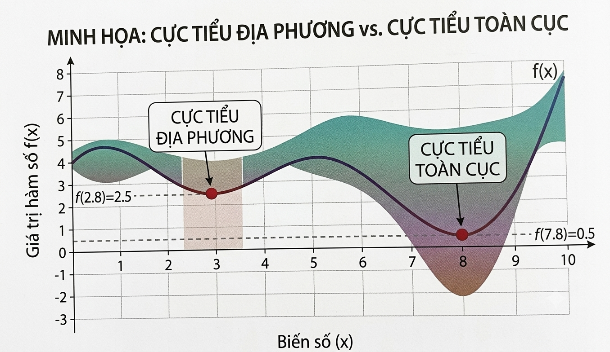
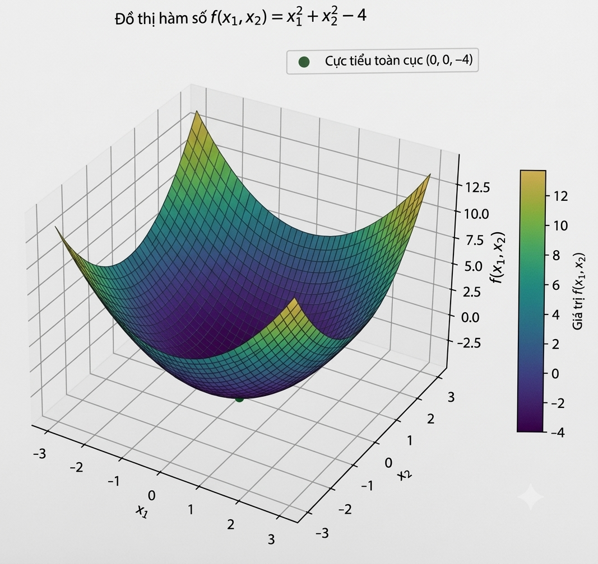
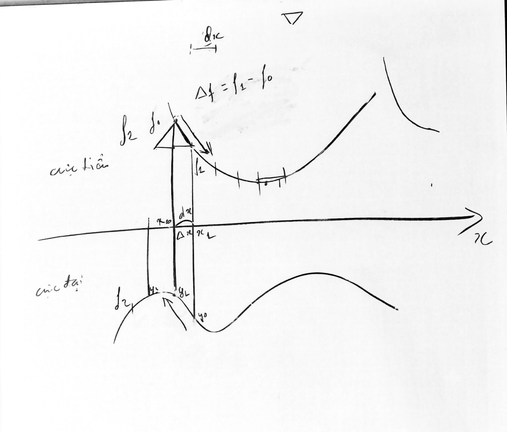

Công ty sản xuất 2 sản phẩm A, B từ 3 loại vật tư I, II, III. Lãi của 1 đơn vị A là 4, 1 đơn vị B là 5. Hãy lập kế hoạch sản xuất để tổng lợi nhuận lớn nhất.
| Vật tư | A | B | Dự trữ |
|---|---|---|---|
| I | 2 | 1 | 8 |
| II | 1 | 2 | 7 |
| III | 0 | 1 | 3 |

| Dấu của Hessian tại điểm dừng | Kết luận |
|---|---|
| \(H(x^*)\) xác định dương | Cực tiểu địa phương chặt |
| \(H(x^*)\) xác định âm | Cực đại địa phương chặt |
| \(H(x^*)\) có trị riêng trái dấu | Điểm yên ngựa — KHÔNG phải cực trị |
| \(H(x^*)\) nửa xác định | Chưa kết luận được |


Bước 0: Chọn \(x_0\)
Bước k: Có \(x_k\)
| k | \(x_k\) | \(f(x_k)\) | Nhận xét |
|---|---|---|---|
| 0 | (2, 2) | 104 | Xuất phát |
| 1 | (1,96 ; 1) | 28,83 | Giảm mạnh (thành phần \(x_2\) lớn) |
| 2 | (1,88 ; 0) | 3,53 | Tiếp tục giảm |
| 3 | (0,88 ; 0) | 0,7784 | Tiến dần về (0, 0) |
| Tiêu chí | Gradient | Newton |
|---|---|---|
| Đạo hàm sử dụng | Cấp 1 (\(\nabla f\)) | Cấp 2 (\(\nabla^2 f\) — Hessian) |
| Tốc độ hội tụ | Tuyến tính (chậm gần cực trị) | Bậc 2 (nhanh) |
| Chi phí mỗi bước | Thấp | Cao (tính + nghịch đảo Hessian) |
| Phù hợp khi | \(n\) lớn, cần đơn giản/rẻ mỗi bước | \(n\) vừa/nhỏ, cần hội tụ nhanh |